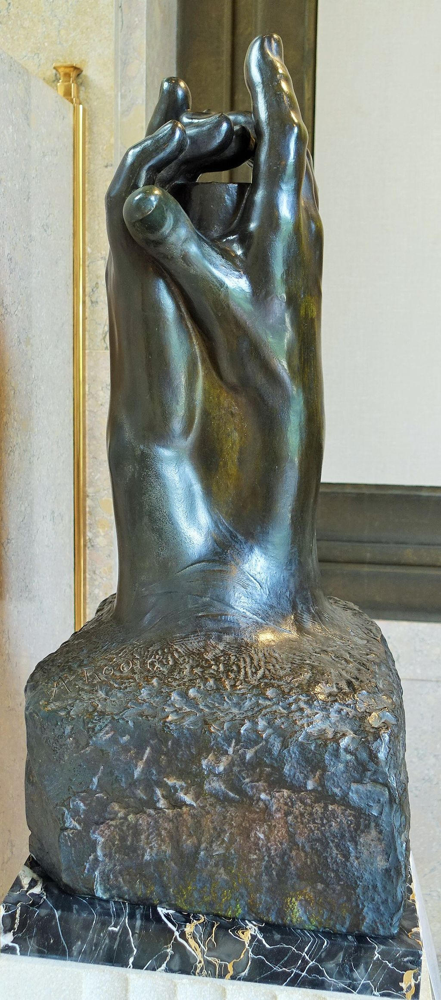

<head>
<meta charset="UTF-8" />
<meta name="keywords" content="drawing, painting" />
<meta name="description" content="drawings by Sunjy" />
<title>Sunjy</title>
<link rel="shortcut icon" type="image/x-icon" href="../../mImages/mCommon/favicon.ico" media="screen" />
<link rel="stylesheet" type="text/css" href="../../mCsses/mCommon/mCssA.css" />
<link rel="stylesheet" type="text/css" href="../../mCsses/mCommon/mCssB.css" />
<link rel="stylesheet" type="text/css" href="../../mCsses/mCommon/mCssC.css" />
<link rel="stylesheet" type="text/css" href="../../mCsses/mCommon/mCssD.css" />
<link rel="stylesheet" type="text/css" href="../../mCsses/mContent/mCssA.css" />
<link rel="stylesheet" type="text/css" href="../../mCsses/mContent/mCssB.css" />
<link rel="stylesheet" type="text/css" href="../../mCsses/mContent/mCssC.css" />
<link rel="stylesheet" type="text/css" href="../../mCsses/mContent/mCssD.css" />
</head>
<script type="text/javascript" src="../../mScripts/mContent/mContentAA.js" /></script>
<script type="text/javascript" src="../../mScripts/mContent/mContentAB.js" /></script>
<script type="text/javascript" src="../../mScripts/mContent/mContentAC.js" /></script>
<script type="text/javascript" src="../../mScripts/mContent/mContentAD.js" /></script>
<script type="text/javascript"></script> 
<script type="text/javascript">
document.write('<div class="mImgAbsolute"></div>');
/*
document.write('<p class="mFontSizeBColor" />From a white paper...</p>');
document.write('<table class="center"><tr><td>');
document.write('');
document.write('</td></tr></table>');
*/
</script>


<script type="text/javascript">
document.write('<p class="mFontSizeBColor" />The Secret </p>');
document.write('<p class="mFontSizeSColor" />“The Secret” was modeled by Auguste Rodin and depicts an unknown object hidden by two palms. The secret is keeping the palms forever apart but close enough for the fingers to touch.<br><br>The two hands are the right hands of two separate people. The sculpture creates an intimate space between the hands and is considered a companion piece to sculpture “The Cathedral.”<br><br>In another sculpture of “Two Hands,” there is an inscription in the plaster version: “Hands of Rodin and Rose Beuret,” which suggests that these hands are the hands of Rodin, the sculptor, and his lover. Was this also the case for this sculpture about a secret?<br><br>In many of the Rodin sculptures of hands, the space between the hands is meaningful and mysterious. Emptiness or space was an essential element of Rodin’s composition. Rainer Maria Rilke pointed out that for Rodin:<br><br>“The role of air had always been extremely important.” <br><br>During his career, Rodin modeled thousands of hands as small clay studies. For Rodin, the hand and the interplay of hands within groups of figures were expressive components of his sculptures. Rodin stated that he felt an:<br><br>“intense passion for the expression of the human hands.”<br><br>Rodin imbued the hands of his figures with a range of emotions, from anger and despair to compassion and kindness. He kept many hand clay studies in his studio, where he would contemplate them as sculptural forms in space.<br><br>When Rodin composed a new figure, he often experimented with different hands at varying angles to explore the possibilities of new expressive combinations.<br><br>This approach reinforced Rodin’s interest in the partial figure, and he felt that representations of parts of the body, such as the hand, are not necessarily dependent upon a complete figure to convey meaning.<br></p>');
document.write('<table class="center" /><tr><td>');
document.write('<br>The two hands are the right hands of two separate people. The sculpture creates an intimate space between the hands and is considered a companion piece to sculpture “The Cathedral.”<br><br>In another sculpture of “Two Hands,” there is an inscription in the plaster version: “Hands of Rodin and Rose Beuret,” which suggests that these hands are the hands of Rodin, the sculptor, and his lover. Was this also the case for this sculpture about a secret?<br><br>In many of the Rodin sculptures of hands, the space between the hands is meaningful and mysterious. Emptiness or space was an essential element of Rodin’s composition. Rainer Maria Rilke pointed out that for Rodin:<br><br>“The role of air had always been extremely important.” <br><br>During his career, Rodin modeled thousands of hands as small clay studies. For Rodin, the hand and the interplay of hands within groups of figures were expressive components of his sculptures. Rodin stated that he felt an:<br><br>“intense passion for the expression of the human hands.”<br><br>Rodin imbued the hands of his figures with a range of emotions, from anger and despair to compassion and kindness. He kept many hand clay studies in his studio, where he would contemplate them as sculptural forms in space.<br><br>When Rodin composed a new figure, he often experimented with different hands at varying angles to explore the possibilities of new expressive combinations.<br><br>This approach reinforced Rodin’s interest in the partial figure, and he felt that representations of parts of the body, such as the hand, are not necessarily dependent upon a complete figure to convey meaning.<br>" />');
document.write('</td></tr></table>');
</script>


